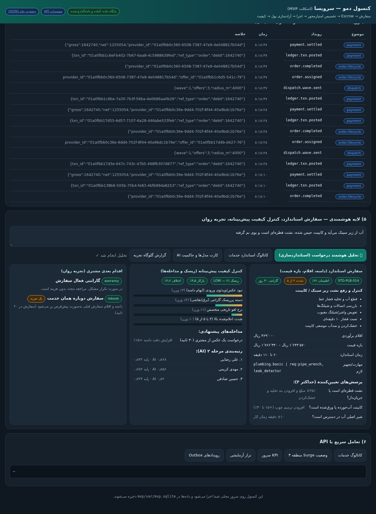
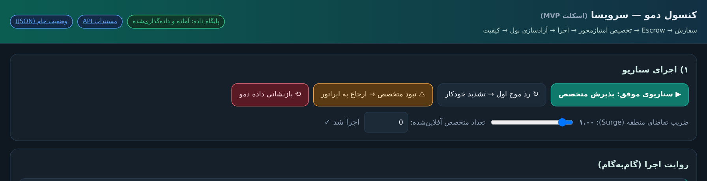

کنسول دمو: سناریوی ۹ گامی سفارش → Escrow → تخصیص موجی → تسویه، بههمراه پنل هوشمندی (استانداردسازی، رتبهبندی مرحله ۲، کیفیت پیشبینانه، اقدام بعدی).
https://careplus-mvp.onrender.comgit clone https://github.com/kian1401/careplus-platform.git cd careplus-platform/mvp pip install -r requirements.txt uvicorn app.main:app --host 0.0.0.0 --port 8000 # مرورگر: http://localhost:8000
توضیح: لینکهای «تونل موقت» قبلی با خوابرفتن محیط توسعه از کار میافتند؛ به همین دلیل مسیر پایدار = Render یا اجرای محلی.
| اهرم | در سند | در کد MVP |
|---|---|---|
| هوشمندسازی تطبیق | بخش AI.۲ | /v1/ai/match/preview |
| استانداردسازی و سفارش با AI | بخش AI.۳ | /v1/ai/intake · /v1/ai/standards |
| کنترل کیفیت پیشبینانه | بخش AI.۴ | /v1/ai/quality/forecast |
| تجربهٔ کاربری روان | بخش AI.۵ | /v1/ai/assistant · /v1/ai/ux/friction-report |
حاکمیت مدل و کارت مدلها: GET /v1/ai/scorecards — شفافیت، انصاف، مرز تصمیم انسانی.


cd mvp && python3 -m pytest tests -q ⇒ ۲۲ آزمون سبز.